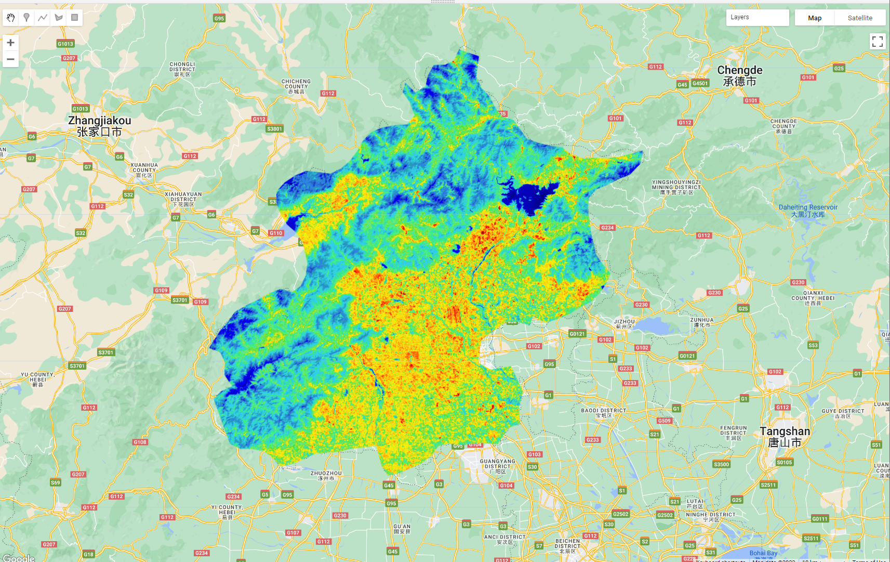

//--------------------------Vector data---------------------------
var dataset = ee.FeatureCollection("FAO/GAUL/2015/level1");
var dataset_style = dataset.style({
color: '1e90ff',
width: 2,
fillColor: '00000000', // with alpha set for partial transparency
// lineType: 'dotted',
// pointSize: 10,
// pointShape: 'circle'
});
Map.addLayer(dataset, {}, 'Second Level Administrative Units_1');
var Beijing = dataset.filter('ADM1_CODE == 899');
Map.addLayer(Beijing, {}, 'Beijing');8 Temperature
Within this practical we are going to explore temperature across urban areas using two different data products: Landsat and MODIS. We’ll then look at which admin areas are hottest over time.
The first stage of this practical is to load up a level 2 admin area to extract temperature for….
8.1 Vector data
8.2 Landsat
Next, the Landsat data…note below that i have set a month range as i want to consider the summer and not the whole year…
//--------------------------Landsat data---------------------------
function applyScaleFactors(image) {
var opticalBands = image.select('SR_B.').multiply(0.0000275).add(-0.2);
var thermalBands = image.select('ST_B.*').multiply(0.00341802).add(149.0);
return image.addBands(opticalBands, null, true)
.addBands(thermalBands, null, true);
}
var landsat = ee.ImageCollection('LANDSAT/LC08/C02/T1_L2')
.filterDate('2022-01-01', '2022-10-10')
.filter(ee.Filter.calendarRange(5, 9,'month'))
.filterBounds(Beijing) // Intersecting ROI
.filter(ee.Filter.lt("CLOUD_COVER", 1))
.map(applyScaleFactors);
print(landsat)The temperature band in Landsat is B10, however it comes in Kelvin and not Celsius, to cover we just subtract 273.1. But i want to do this per image…at the moment .subtract won’t work over an image collection so we can subtract the value from each individual image in a collection…we also want to mask any pixels that have a below 0 value (e.g. probably no data ones). I’ve done this within this function as well..
var subtracted = landsat.select('ST_B10').map(function (image) {
var subtract = image.subtract(273.1); // subtract
var mask = subtract.gt(0); //set mask up
var mask_0 = subtract.updateMask(mask); //Apply this in a mask
return mask_0
}) If we were to plot this now, we would still show all of the images we have in the collection, but, we can take the mean (“reduce”) and clip to our study area…
var subtracted_mean = subtracted.reduce(ee.Reducer.mean())
.clip(Beijing)Then finally plot the data…
// set up some of the visualisation paramters
// the palette is taken from the MODIS example (which we will see later on)
var vis_params = {
min: 20,
max: 55,
palette: [
'040274', '040281', '0502a3', '0502b8', '0502ce', '0502e6',
'0602ff', '235cb1', '307ef3', '269db1', '30c8e2', '32d3ef',
'3be285', '3ff38f', '86e26f', '3ae237', 'b5e22e', 'd6e21f',
'fff705', 'ffd611', 'ffb613', 'ff8b13', 'ff6e08', 'ff500d',
'ff0000', 'de0101', 'c21301', 'a71001', '911003'
]
};
Map.addLayer(subtracted_mean, vis_params, 'Landsat Temp');
8.3 MODIS
Now, we can also do the same process with the Moderate Resolution Imaging Spectroradiometer (MODIS), MODIS is an instrument aboard both the Terra and Aqua satellites. Terra crosses the equator from N to S in the morning and Aqua S to N in the afternoon meaning the entire earth is sampled every 1-2 days, with most places getting 2 images a day.
8.3.1 Aqua
var MODIS_Aqua_day = ee.ImageCollection('MODIS/061/MYD11A1')
.filterDate('2022-01-01', '2022-10-10')
.filter(ee.Filter.calendarRange(5, 9,'month'))
.filterBounds(Beijing) // Intersecting ROI;
.select('LST_Day_1km')
print(MODIS_Aqua_day, "MODIS_AQUA") 8.3.2 Terra
var MODIS_Terra_day = ee.ImageCollection('MODIS/061/MOD11A1')
.filterDate('2022-01-01', '2022-10-10')
.filter(ee.Filter.calendarRange(5, 9,'month'))
.filterBounds(Beijing) // Intersecting ROI;
.select('LST_Day_1km')
print(MODIS_Terra_day, "MODIS_Terra") 8.3.3 Scaling
For the Landsat data in this period we had 5 images, compared to 108 for Aqua and 107 for Terra!But! MODIS data is at 1km resolution…and if you look at the values (through adding one of the collections to the map) we haven’t addressed the scaling….
Like Landsat data MODIS data needs to have the scale factor applied, looking at the GEE documentation or the MODIS documentation we can see that the value is 0.02 and the values are in Kelvin, when we want Celcius….
function MODISscale(image) {
var temp = image.select('LST_.*').multiply(0.02).subtract(273.1);
return image.addBands(temp, null, true)
}
var MODIS_Aqua_day = ee.ImageCollection('MODIS/061/MYD11A1')
.filterDate('2022-01-01', '2022-10-10')
.filter(ee.Filter.calendarRange(5, 9,'month'))
.select('LST_Day_1km')
.map(MODISscale)
.filterBounds(Beijing); // Intersecting ROI;
print(MODIS_Aqua_day, "MODIS_AQUA")
var MODIS_Terra_day = ee.ImageCollection('MODIS/061/MOD11A1')
.filterDate('2022-01-01', '2022-10-10')
.filter(ee.Filter.calendarRange(5, 9,'month'))
.filterBounds(Beijing) // Intersecting ROI;
.select('LST_Day_1km')
.map(MODISscale);8.3.4 Collection merge
Merge the collections and plot a mean summer temperature image…
var mean_aqua_terra = MODIS_Aqua_day.merge(MODIS_Terra_day)
.reduce(ee.Reducer.mean())
.clip(Beijing)
Map.addLayer(mean_aqua_terra, landSurfaceTemperatureVis,
'MODIS Land Surface Temperature');8.3.5 Display the results
var landSurfaceTemperatureVis = {
min: 15,
max: 45,
palette: [
'040274', '040281', '0502a3', '0502b8', '0502ce', '0502e6',
'0602ff', '235cb1', '307ef3', '269db1', '30c8e2', '32d3ef',
'3be285', '3ff38f', '86e26f', '3ae237', 'b5e22e', 'd6e21f',
'fff705', 'ffd611', 'ffb613', 'ff8b13', 'ff6e08', 'ff500d',
'ff0000', 'de0101', 'c21301', 'a71001', '911003'
],
};
Map.addLayer(mean_aqua_terra, landSurfaceTemperatureVis,
'MODIS Land Surface Temperature');What do you see ?
8.4 Timeseries
So the real benefit of MODIS data is that we can plot the time series…however in doing so we lose the spatial element…
var timeseries = ui.Chart.image.series({
imageCollection: aqua_terra,
region: Beijing,
reducer: ee.Reducer.mean(),
scale: 1000,
xProperty: 'system:time_start'})
.setOptions({
title: 'Temperature time series',
vAxis: {title: 'LST Celsius'}});
print(timeseries);Times series modelling….https://developers.google.com/earth-engine/tutorials/community/time-series-modeling
8.5 Statistics per spatial unit
8.5.1 Landsat
To start with let’s just explore the average temperature per GAUL level 2 area within the Beijing level 1 area….we can do this using the reduceRegions function….
//--------------------------Statistics per level 2---------------------------.
var GAUL_2 = ee.FeatureCollection("FAO/GAUL/2015/level2");
var Beijing_level2 = GAUL_2.filter('ADM1_CODE == 899');
Map.addLayer(Beijing_level2, {}, 'Second Level Administrative Units_2');
print(subtracted_mean)
var mean_Landsat_level2 = subtracted_mean.reduceRegions({
collection: Beijing_level2,
reducer: ee.Reducer.mean(),
scale: 30,
});
Map.addLayer(mean_Landsat_level2, {}, 'mean_Landsat_level2');When we inspect the new vector file we can see that a mean column has been added to the attribute table….
Can we style this better? AM to check
8.5.1.1 Export
To export a feature collection like this…
// Export the FeatureCollection to a SHP file.
Export.table.toDrive({
collection: mean_Landsat_level2,
description:'mean_Landsat_level2',
fileFormat: 'SHP'
});We can then open it in QGIS to see our average tempearture per spatial untit.
8.5.2 MODIS
To get the time series data per spatial unit in MODIS we can use the similar code as before, but this time we:
- use the function
ui.Chart.image.seriesByRegion - set our
regionsargument to the lower level spatial data….
var chart = ui.Chart.image.seriesByRegion({
imageCollection: MODIS_Aqua_day,
regions: Beijing_level2, //this is the difference
reducer: ee.Reducer.mean()
})
print(chart)We could make the plot a bit fancier in GEE…here, i have adapted the code from the documentation…
var timeseries_per_unit = ui.Chart.image.seriesByRegion({
imageCollection: aqua_terra,
//band: 'NDVI',
regions: Beijing_level2,
reducer: ee.Reducer.mean(),
scale: 1000,
//seriesProperty: 'label',
xProperty: 'system:time_start'
})
.setOptions({
title: 'Average temp per spatial unit',
hAxis: {title: 'Date', titleTextStyle: {italic: false, bold: true}},
vAxis: {
title: 'LST Celsius',
titleTextStyle: {italic: false, bold: true}
},
lineWidth: 1
// colors: ['0f8755', '808080'],
});8.5.2.1 Export
We could then export the data to run some time series analysis for the spatial units (e.g. in R), this might be interesting if we know characteristics of land cover or development change over time…..
// Collect block, image, value triplets.
var triplets = aqua_terra.map(function(image) {
return image.select('LST_Day_1km').reduceRegions({
collection: Beijing_level2.select(['ADM2_CODE']),
reducer: ee.Reducer.mean(),
scale: 30
}).filter(ee.Filter.neq('mean', null))
.map(function(f) {
return f.set('imageId', image.id());
});
}).flatten();
print(triplets.first(), "trip")
Export.table.toDrive({
collection: triplets,
description: triplets,
fileNamePrefix: triplets,
fileFormat: 'CSV'
});You can also change how the data is exported, although I would now just do some wrangling in R. See the:
8.6 Trend analysis
To extended our analysis we could explore statistics that will establish if we have a significant increasing or decreasing trend within our data. For example…the Mann-Kendall trend test. Once we have identified these pixels or areas we could then investigate them further with Landsat surface temperature data and landcover data.
8.7 Heat index
Make this - https://www.bbc.co.uk/news/uk-62243280
8.8 Considerations
Following the lecture, could the red lined areas experience higher temperatures?
Could a similar analysis be done for other variables? Such as pollution
Could we make a pollution index similar to the heat index
Could we make a flood index or explore flooding over time in cities / determine areas that need remediation